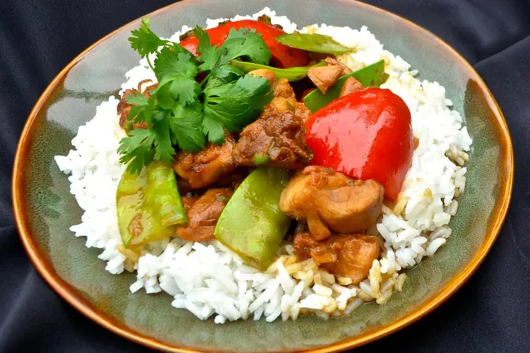

Introduction
When you need a quick and easy meal, stir-fry is always there.
Once you've prepped your ingredients, it comes together in the wok in just a matter of minutes. And it's so versatile you can use ingredients you already have on hand, like say, chicken.
Pull your frozen chicken breasts out of the freezer, or use leftover chicken from last night to whip up tonight's stir-fry dinner.
Here is the chicken stir-fry recipe that will even rival your favorite takeout.
Ingredients
- Vegetable oil
- Two chicken breasts or chicken thighs, diced
- Two eggs, scrambled
- One cup of day old rice
- Two bell peppers, diced
- One white onion, diced
- Three clove of garlic, finely minced
- Scallions or green onions, chopped
- Soy sauce
Instructions
Friendly reminder to prep all veggies by dicing or mincing beforehand
- Heat up your wok or pan on high heat with your vegetable oil
- Crack your eggs into the wok and stir for 30 second
- Remove the eggs from the wok into a bowl and place them to the side
- Sautee your onions and bell peppers
- Add in your minced garlic, stirring frequently
- Add your diced chicken breast or chicken thigh
- Incorporate your one cup of day old rice
- Reintroduce your scrambled eggs into the mix, dispersing throughout the rice
- Pour roughly two to three tablespoons of soy sauce and don't be afraid to pour more if you need
- Serve and top with scallions or green onions, and sesame seeds
- Enjoy!
Return to top
Return to main page